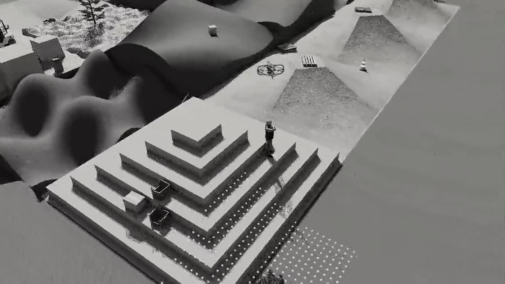

01 PPO · Isaac Sim · YOLO26n · A*
Drone Search & Rescue
A reinforcement-learning pilot flies a drone over a simulated disaster site. A ground station maps the site as it is uncovered and pins every person the drone finds. Then a four-legged robot walks the rubble to reach one of them.

-
A PPO policy trained only to reach a point and hover follows the survey line: 428 m in about six minutes, landing 7 mm from the centre of its pad.
-
A YOLO26n detector fine-tuned on auto-labelled simulator images finds 255 of 256 people on seven sites it never saw. The stock COCO model finds 107.
-
The ground station builds the height map live and pins what the drone sees: 10 of 10 people, no false alarms, pins 4 cm from the truth on average.
-
A custom quadruped plans a route across the drone’s map with A* and walks it. 32 of 32 runs reached the person, with no falls.